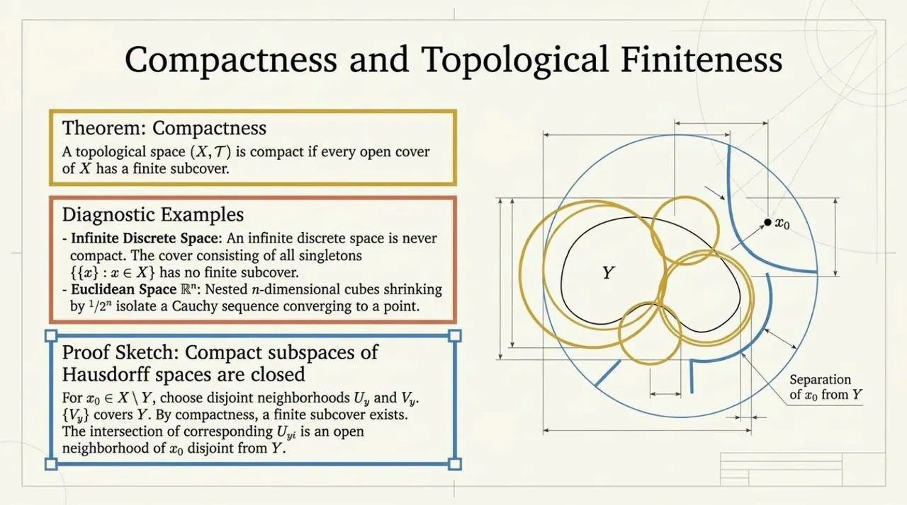

기둥 1 · 공간을 나누는 법 · 04장
콤팩트 — 유한한 우산으로 다 덮기
무한을 유한으로 줄여 주는 마법 같은 성질
무한을 유한으로 줄여 주는 마법 같은 성질
핵심 질문 — 끝없이 많은 우산 중에서 유한 개만 골라도 다 덮이는 공간은 무엇이 특별할까?
비가 오는 운동장을 우산(열린 집합)으로 덮는다고 해 봐요. 누가 어떤 우산 모음을 가져오든 그중 유한 개만 골라 다 덮을 수 있으면, 그 운동장을 콤팩트라고 불러요. 끝점까지 포함한 [0, 1]은 콤팩트이고, 끝점이 빠진 (0, 1)은 아니에요.
숫자 요약은 이 장의 예시 계산에서 나온 값입니다(실제 데이터가 아닌 설명용 값).
계산배틀입니다! 오늘의 종목은 「우산 세기」. 숫자는 거짓말을 안 해요.
숫자 싸움이면 제가 이기죠. 우산 100개면 뭐든 덮어요!
행렬·벡터, 복잡한 공식을 몰라도 됩니다. 그림을 움직여 보고, 밑줄 친 말을 누르면 뜻이 나옵니다.
어떤 열린 덮개(우산 꾸러미)에서도 유한 개만 골라 공간 전체를 덮을 수 있음.
(0, 1)은 우산 (1/n, 1)로 유한 개만 고르면 0 근처가 남음. 무한 이산 공간은 1인용 우산 덮개가 반례.
닫힌 상자 [0, 1]ⁿ은 반씩 자르기로 콤팩트. (원자료의 「ℝⁿ」을 바로잡음)
원자료(영어) 그림 13번을 한국어로 다시 그렸어요. 원자료에서 바로잡은 곳은 이 그림에 이미 반영했어요.
이 페이지 사용법: 밑줄 친 말을 누르면 뜻이 나옵니다(Esc로 닫기). 단계마다 그림을 직접 움직여 보고, 끝의 확인 퀴즈로 점검하세요. 앞 장: 03 연결과 끊김 — 한 덩어리인가, 둘로 갈라지나
조교 둘이 「우산 몇 개면 덮이나」를 숫자로 겨루고, 수강생은 손계산으로 검산해요. 이긴 쪽 근거를 박사가 판정합니다.
숫자 세기는 내 담당. 검산은 2조가 할게.
1조는 「반례 찾기」로 갈게요.
콤팩트한 공간에서는 「모든 점에서 성립」하는 국소적인 사실을 유한 개만 모아 전체 사실로 만들 수 있어요.
01장의 열림·닫힘 차이가 여기서 결정적인 차이가 돼요. (0,1)과 [0,1]은 끝점 두 개 차이로 운명이 갈려요.
무한 이산 공간은 절대 콤팩트하지 않아요. 13장에서는 이 공간을 콤팩트하게 「마무리」하는 방법을 배워요.
「모든 덮개에 대해」라는 말이 핵심이에요. 덮이는 덮개 하나를 찾는 것으로는 콤팩트를 보일 수 없고, 안 덮이는 덮개 하나로는 콤팩트가 아님을 보일 수 있어요.
상황 질문 — 친구들이 우산을 잔뜩 가져왔어요. 그중 몇 개만 펴서 운동장을 다 덮을 수 있을까요? 언제나 가능할까요?
(1/n, 1)이 n에 따라 어떻게 변하는지 감이 안 와요.
학교 수학으로 보면: 중학교 분수: n이 커지면 1/n은 0에 가까워져요(1/2, 1/3, 1/10, 1/100 …). 하지만 0이 되지는 않아요.
| 식 조각 | 읽는 법 | 뜻 |
|---|---|---|
| (1/n, 1) | 엔분의 일부터 일까지 열린 구간 | n번째 우산이 덮는 곳 |
| ⋃ (1/n, 1) | 모두 합친 것 | n = 2, 3, 4, … 전부 합치면 (0, 1) 전체 |
| 유한 부분 덮개 | 그중 유한 개만 골라도 전체를 덮는 것 |
n = 2, 3, …, 100 우산 99개를 합치면 (1/100, 1)
못 덮은 곳: (0, 0.01] — 길이 0.01
n을 1,000,000까지 늘려도 (0, 0.000001]이 남음
그래서 이 덮개에는 유한 부분 덮개가 없음 → (0, 1)은 콤팩트가 아님
전부 합치면 다 덮이는데, 유한 개만 고르면 꼭 0 근처가 남는구나!
우산이 무한히 많은데 하나하나는 0 쪽으로 조금씩만 길어져요. 몇 개를 골라도 0 바로 옆 땅은 늘 젖어요.
(0, 1)의 열린 덮개 {(1/n, 1)}에는 유한 부분 덮개가 없어요. 그래서 (0, 1)은 콤팩트가 아니에요. 반면 [0, 1]은 0을 담은 우산이 반드시 덮개에 있어야 해서, 그 우산이 0 근처를 통째로 해결해 줘요.
우산 수를 100까지 올려 보세요. 빨간 틈이 사라지나요?
100개면 거의 다예요. 0.01쯤은 반올림하면 0!
반올림은 반칙이야. [0, 1]로 바꾸면 무엇이 달라지는지 봐.
원자료 「Compactness and Topological Finiteness」 맨 위 정리 상자: 모든 열린 덮개에 유한 부분 덮개가 있으면 콤팩트.

상황 질문 — 학생이 끝없이 많은 학교에서 「한 사람당 우산 하나」만 쓸 수 있다면, 우산 몇 개가 필요할까요?
1인용 우산은 딱 한 사람만 가려 줘요. 사람이 끝없이 많으면 우산도 끝없이 많이 필요해요.
무한 이산 공간 X의 덮개 {{x} : x ∈ X}는 어떤 우산을 빼도 그 점이 안 덮여서 유한 부분 덮개가 없어요. 그래서 무한 이산 공간은 콤팩트가 아니에요. 유한 이산 공간은 콤팩트예요.
이산 공간에서 「1인용 우산」을 하나 빼면 어떻게 될까요?
다른 우산이 좀 가려 주지 않을까요?
1인용 우산들은 서로 하나도 안 겹쳐. 빼는 순간 그 사람은 젖어.
원자료 「Diagnostic Examples」 첫 줄: 무한 이산 공간은 한 점짜리 덮개에 유한 부분 덮개가 없어 콤팩트가 아님.
상황 질문 — 보물이 지도 어딘가에 있다면, 지도를 넷으로 접고 또 접어서 보물 위치를 좁혀 갈 수 있을까요?
1/2ᵏ이 0에 가까워진다는 게 왜 중요해요?
학교 수학으로 보면: 중학교 거듭제곱과 고등학교 등비수열: 1/2, 1/4, 1/8, 1/16, … 반씩 줄어서 결국 0에 가까워져요.
| 식 조각 | 읽는 법 | 뜻 |
|---|---|---|
| [0,1]² | 영 일 닫힌 구간의 제곱 | 테두리까지 포함한 정사각형 |
| 1/2ᵏ | 2의 k제곱 분의 1 | k번 4등분한 조각의 한 변 |
| 조각들의 공통 점 | 접고 또 접은 조각들이 모두 포함하는 단 하나의 점 |
한 변 1 → 4등분 1번: 1/2 → 2번: 1/4 → 3번: 1/8
10번이면 1/1024 ≈ 0.001, 20번이면 약 0.000001
조각들이 끝없이 작아지며 한 점으로 모임
그 점은 테두리 포함 [0,1]² 안 → 닫혀 있어서 「밖으로 새지 않음」
열린 상자였다면 그 점이 테두리 위에 있어서 상자 밖이 될 수도 있었겠네요.
보물 지도를 넷으로 접어 「단서가 가장 많은 쪽」을 고르는 것을 반복하면, 지도의 한 점을 가리키게 돼요. 지도에 테두리까지 그려져 있으면 그 점은 지도 안에 있어요.
닫힌 상자 [0,1]ⁿ은 4등분(일반적으로 2ⁿ등분)을 반복해 점들이 모이는 곳을 찾을 수 있어 콤팩트예요. 이 원리가 하이네-보렐 정리 「ℝⁿ에서 닫혀 있고 유계인 집합 = 콤팩트」의 핵심이에요.
「한 번 더 4등분」을 여러 번 눌러 보세요. 초록 상자가 어떻게 되나요?
8번이면 1/256! 계산 끝!
계산은 맞아. 그런데 그 점이 상자 밖으로 새면 어떡해? 테두리를 생각해 봐.
원자료 「Diagnostic Examples」 둘째 줄과 아래 「Proof Sketch」: 콤팩트 부분공간은 하우스도르프 공간에서 닫혀 있다.
하우스도르프 공간 X에서 콤팩트 부분집합 Y는 닫혀 있다: x₀ ∉ Y에 대해 각 y ∈ Y마다 겹치지 않는 이웃 U_y ∋ x₀, V_y ∋ y를 잡으면 {V_y}가 Y를 덮고, 유한 개 V_{y₁}, …, V_{yₖ}로 줄일 수 있다. 그러면 U_{y₁} ∩ … ∩ U_{yₖ}는 x₀의 열린 이웃이고 Y와 만나지 않는다. 따라서 X \ Y가 열려 있다.
하루가 AI에게 「[0, ∞)는 닫힌 집합이니까 콤팩트인가요?」라고 물었어요.
AI가 조건 두 개짜리 정리(닫힘 + 유계)를 조건 하나로 줄여 말하면 위험 신호예요. 끝없이 뻗는 예 하나를 넣어 보세요.
우산 (1/2, 1), (1/3, 1), …, (1/100, 1)로 (0, 1)을 다 덮을 수 있는지 계산배틀!
「못 덮어. 0 근처 0.01만큼이 남아.」
「우산 99개면 충분하죠. 거의 0까지 가요!」
누가 맞을지 먼저 예상해 보고 단추를 누르세요. 판정은 계산 결과로만 합니다.
개념정리 흐름: 콤팩트 → 무한 이산 공간은 콤팩트가 아님 → 닫힌 상자의 콤팩트성 (하이네-보렐)
| 개념 | 한 줄 뜻 | 일상 비유 | 비유의 한계 |
|---|---|---|---|
| 열린 덮개 | 공간을 다 덮는 열린 집합(우산) 모음 | 우산 꾸러미 | 우산은 크기가 있지만 열린 집합은 모양이 자유로워요 |
| 콤팩트 | 모든 열린 덮개에서 유한 개로 충분 | 어떤 꾸러미든 몇 개만 골라 쓰기 | 「작다」는 뜻이 아니에요 — 13장의 βℕ는 엄청 크지만 콤팩트 |
| 무한 이산 공간 | 콤팩트가 아님 (1인용 우산 덮개) | 한 사람당 우산 하나 | 같은 점들이라도 위상을 바꾸면 콤팩트가 될 수 있음 |
| 하이네-보렐 | ℝⁿ에서 닫힘 + 유계 = 콤팩트 | 보물 지도 접기 | ℝⁿ 밖의 일반 공간에서는 성립하지 않을 수 있음 |
계산배틀 결과: 초파리 연구원 2승. 「거의」라는 말은 수학에서 반올림 금지입니다.
0.01이 그렇게 중요할 줄이야….
검산 결과 1/2⁵ = 1/32, 맞았어.
다음 시간은 컴퓨터 그림 이야기래요. 픽셀!
다음 장 예고: 05장 조별 토론에서는 사진의 픽셀이 「연결」을 어떻게 헷갈리게 하는지, 그리고 칼림스키 위상이 그 역설을 어떻게 푸는지 다뤄요.